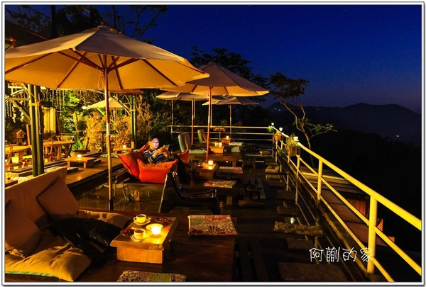
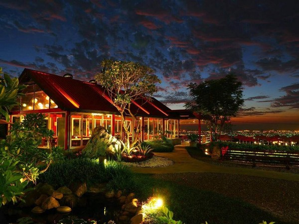
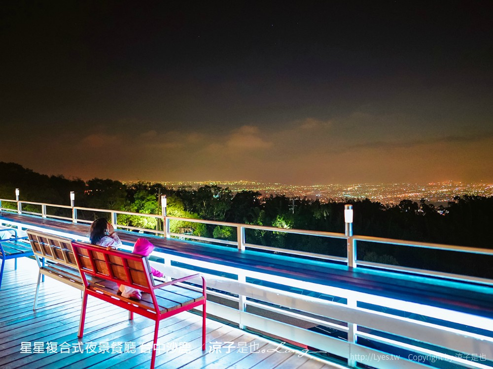

|  |
若茵農場（圖／阿蒯的家）:
曾被網友票選為「隱藏版在地景點」第一名的若茵農場，海拔約1100公尺， |
|---|
|  |
不夜天夜景餐廳(圖／取自不夜天夜景餐廳粉絲專頁):
想邊吃美食邊欣賞美景嗎？位於龍井區的不夜天夜景餐廳，耗資千萬打造出全透明玻璃屋， |
|---|
|  |
星星複合式夜景餐廳。（圖／涼子是也）
這裡的地點可以說是位於台中海線夜景的制高點，除了視野遼闊的景色之外， |
|---|